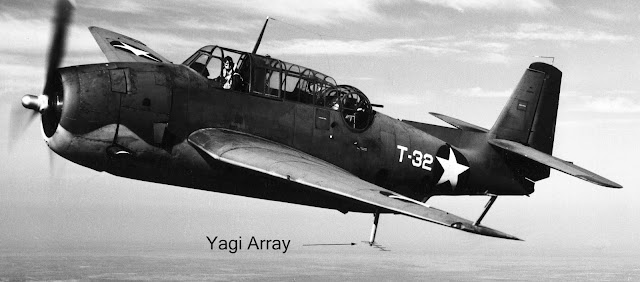
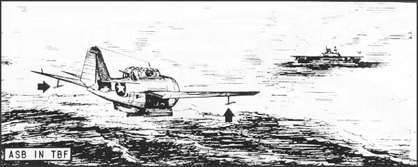
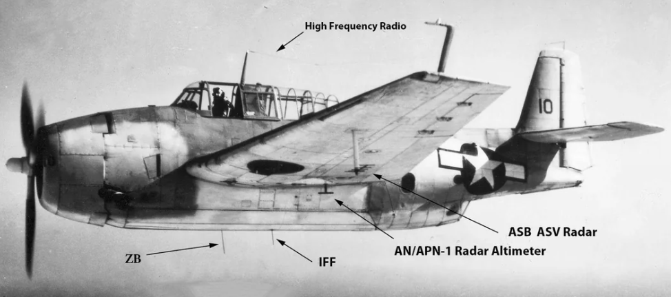
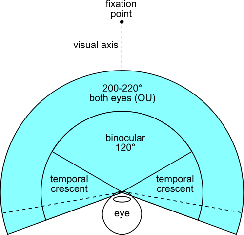
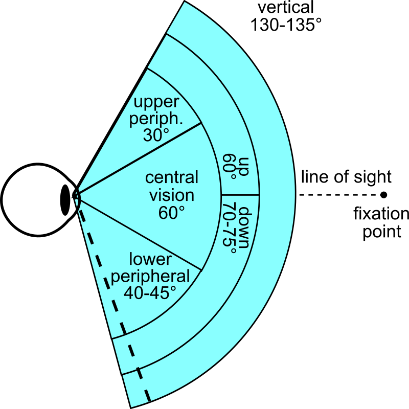
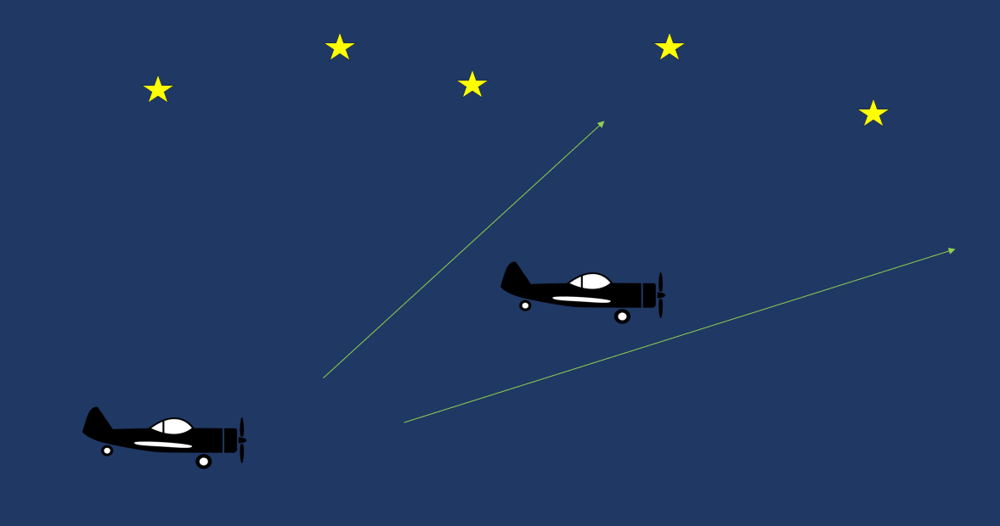
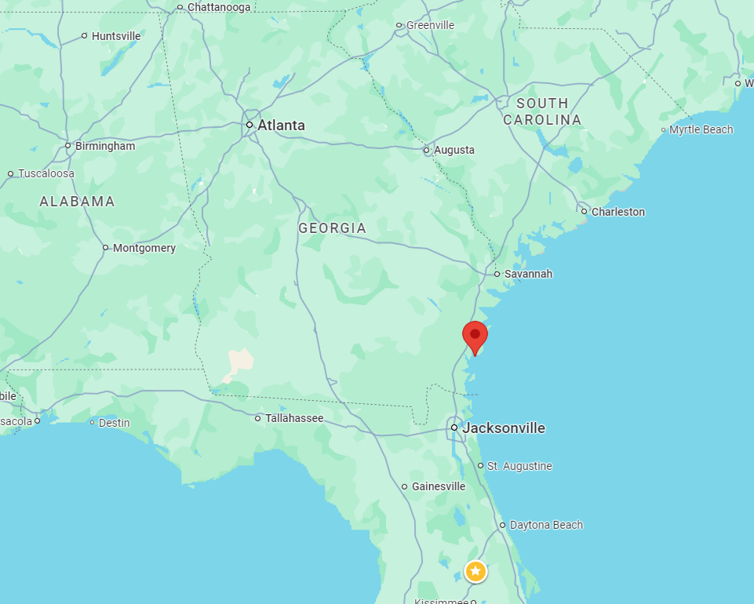
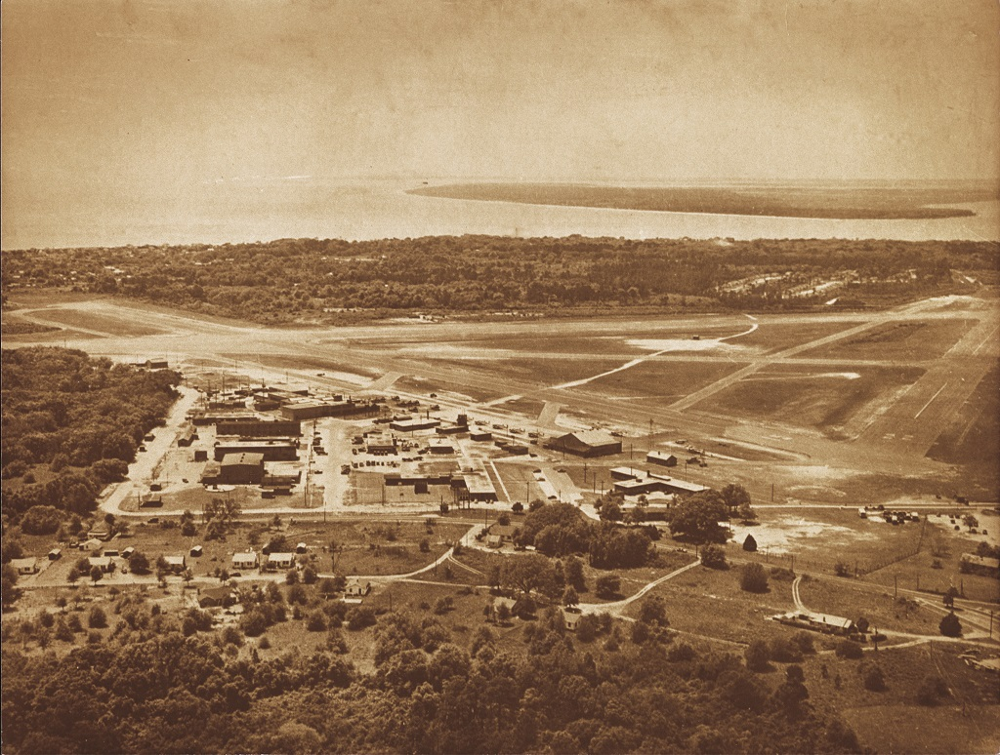
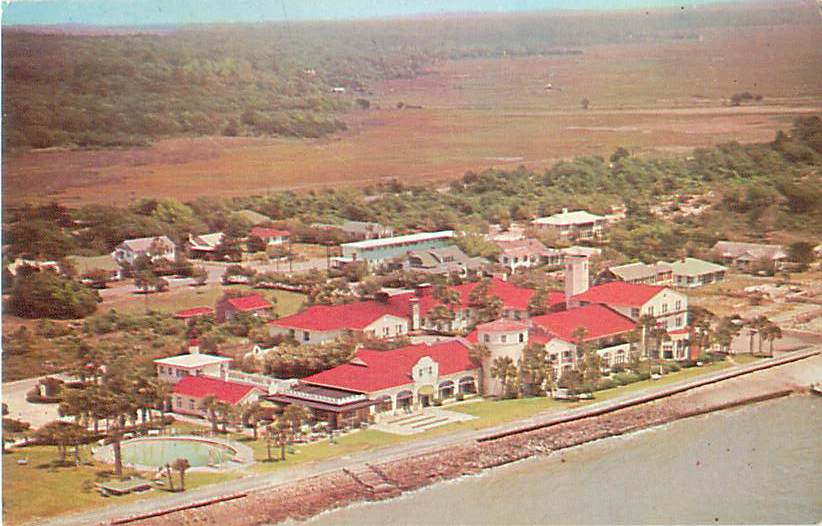
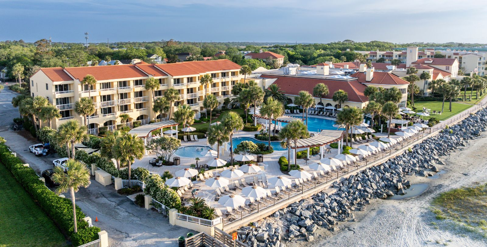

WW2의 야간 전투기 이야기 (1) - 미해군의 ASB 레이더
게시: 2025-10-09T06:30:24+09:00
<미제 공대함 레이더의 개발> 타란토 습격 작전에서도 보았듯이, 생각있는 항공 전문가라면 누구나 야간 작전을 중요하게 생각했고 그런 경향은 타란토 습격이 대성공으로 끝나면서 더욱 강해졌음. 비록 영국해군 항공대는 공대지 레이더의 도움 없이도 달빛과 조명탄의 도움만 받고도 그 임무를 잘 수행해냈지만, 반대로 이탈리아군에게 지대공 레이더로 유도되는 대공포가 있었던가, 특히 공대공 레이더가 장착된 야간 전투기(night fighter)가 있었다면 영국해군의 느림보 Swordfish 뇌격기들의 임무는 처절하게 실패했을 가능성이 매우 높았음. 공격측 입장에서도, 만약 공대지 레이더가 있었다면 고정 목표물인 항구가 아니라 바다 위를 항진하는 적함대도 노려볼 수 있었을 것. 이런 고려 사항들 때문에, 미군에서도 항공기 장착 레이더의 필요성에 대해서는 일찌감치 깨닫고 있었음. 이미 1941년 미항공국(Bureau of Aeronautics)은 해군 연구소(Naval Research Laboratory)에게 항공기 탑재용 레이더 개발을 의뢰. 그런데 불행하게도 공대공 레이더를 만들 정도의 고주파 기술이 없었음. 해군 연구소에서는 이미 가지고 있던 기술, 즉 전파 고도계(radio altimeter)를 대충 응용하여 얼치기 공대지 레이더 XAT를 만듬. 이 XAT 공대함 레이더는 기존에 사용되던 515 MHz(파장 0.58 m) 의 주파수를 사용하는 한 쌍의 지향성 야기(Yagi) 안테나로 구성되었는데, 그 형태는 영국군 해상 초계기가 사용하던 것과 비슷했음.

(어벤저 뇌격기 날개 밑에 달린 XAT/ASB 레이더의 Yagi 안테나. 이 그림에서는 야기 안테나가 측면을 향하고 있음. 즉 탐색 전파는 정면이 아니라 측면으로 조사됨.) 다만 영국군 해상 초계기가 동체 양쪽에 하나씩 야기 안테나를 배치한 것과는 달리, 미해군에서는 양날개의 끝부분 아래쪽에 야기 안테나를 하나씩 배치하고, 그 방향을 전면 혹은 측면을 향하게 조정하도록 했음. 두 야기 안테나를 측면으로 향하게 하면 항공기 양쪽으로 폭 40km에 걸친 지역을 탐색할 수 있었는데, 대신 이렇게 하면 '뭔가가 어느 거리에 있다'는 것만 알 수 있었고, 정확한 방위각은 알 수가 없었음. 그런 식으로 잠수함이든 군함이든 혹은 해안선이든, 아무튼 뭔가 물체를 확인하면, 그 방향으로 기수를 돌리고 두 야기 안테나를 정면으로 향하게 했음. 그러면 두 날개 끝의 좌우 야기 안테나에 잡히는 두 신호 강도를 비교하면서, 그 두 신호의 강도, 즉 레이더 스코프에 보이는 두 개의 peak 신호의 길이가 정확히 같아질 때까지 기수 방향을 조정하면, 그 방향이 목표물을 향하는 정확한 방향인 것. 이 간단한 XAT 공대함 레이더는 수상 목표물에 대해서 유효하다고 했으나, 일부에서는 '공중 목표물', 그러니까 항공기도 잘 잡아내었다고 함.

(어벤저 뇌격기에 장착된 XAT/ASB 레이더. 그림에서는 굵은 화살표로 야기 안테나의 위치를 보여주고 있음. 지금 저 그림에서 야기 안테나 한 쌍은 모두 정면을 향하고 있는데, 뭔가 목표물을 포착하고 영점 조준에 들어갔다는 이야기. 그래서 앞에 항공모함처럼 보이는 물체가 있는 것. 다만 저걸 이용하여 야간이나 안개 낀 바다에서 일본군 수상함을 타격했다는 기록은 아직 못 찾았음.)
이 XAT 공대함 레이더는 정식으로는 ASB로 제식명칭이 주어졌고, 1942년부터 1944년 사이에 RCA, Bendix 사, Westinghouse Electric 사에 생산 계약이 발주됨. ASB는 총 26,000여 기가 생산됨. 이는 제2차 세계대전 중 단일 기종의 레이더로서는 최대 규모의 발주 및 생산. ASB 레이더의 성능은 잠수함 같은 경우엔 13km 까지 접근해야 볼 수 있었고, 순양함의 경우엔 40km 밖의 것도 포착이 가능. 방위각 정확도는 3도 정도였으니 가까운 목표물이라면 꽤 정확했던 셈. 다만 무게가 69kg으로서, 결코 가벼운 편은 아니었음. 참고로 당시 전투기에 들어가던 M2 Browing 12.7mm 기관총 본체의 무게가 대략 40kg.

(어벤저 뇌격기의 각종 안테나들 설명. 여태까지 제 블로그를 읽으신 분들은 대부분 이해하실 듯. 저 중 바닥에 있는 ZB라는 것은 함재기가 항모를 찾을 수 있도록 해주는 beacon 신호인 YE-ZB homing system의 신호 수신기.) (보통 0.50인치 구경, 그러니까 50 calibre로 불리던 M2 기관총의 항공기 탑재용 버전인 AN/M2 기관총.) <문제는 사람이야> 이렇게 어정쩡한 기술력으로 만들어진 ASB는 의외로 꽤 실용적인 공대함 레이더로 자리 잡아 초창기 야간 전투기 뿐 아니라 뇌격기, 급강하 폭격기, 정찰기 등에 탑재됨. 폭격기와 정찰기에서는 조종사 외에 적어도 한 명의 레이더 조작병이 탑승. 문제는 단좌형 야간 전투기였는데, 한 명의 조종사가 비행기를 몰면서 레이더도 조작하는 일은 사실상 너무 어려운 일이었음. 무엇보다, 이 제한적인 기술력의 ASB 하나만 가지고 칠흑같이 깜깜하고 드넓은 밤하늘에서 적기를 찾아내는 것은 사실상 불가능한 일. 출력도 약하고 범위도 좁은 항공기 탑재 ASB 레이더로는 눈 앞 1~2km 앞까지 이미 들어온 적기를 확인하는 것 정도가 전부. 이 문제의 해결은 결국 지상 또는 함상 대공 탐색 레이더를 이용하는 FDO (Figher Direction Officer, 전투기 관제사)의 활용. 그러니까, 훨씬 더 크고 성능 좋은 지상 혹은 함상의 레이더가 아군 야간 전투기와 적기를 모두 추적하며 아군 야간 전투기에게 어느 방향 어느 고도로 날아가라고 무전으로 지시하여, 아군 야간 전투기 코 앞에 적기가 놓이는 순간까지 유도해주는 것. 그야말로 코 앞까지 적기를 떠먹여주는 셈. 그런데 그게 의외로 쉽지 않았음. 평범한 주간 FDO에 비해 야간 FDO는 업무 난이도가 훨씬 더 높았는데, 생각해보면 그 이유는 간단. 일단 주간 FDO의 임무는 아군 요격기를 적기가 맨 눈에 보이는 수 km 거리까지만 유도하면 되는 것. 야간 FDO도 아군 야간 전투기에는 공대공 레이더가 있으니까 마찬가지로 적기 근처 수 km 거리까지 유도하기만 될 것 같은데, 거기서 중요한 차이점이 발생. 일단 사람의 눈은 주간에는 굉장히 뛰어난 탐색기라서 두 눈을 모두 쓰는 경우 좌우로는 200~220도, 상하로는 130~135도를 탐색 가능. 그러니 적기에 아군 요격기를 유도하여 접근시킬 때 적기의 앞 방향으로 접근시키든 측면으로 접근시키든 큰 상관이 없음. 그러나 ASB 레이더는 그게 안 되기 떄문에, 꽤 세밀한 각도로 아군 야간 전투기 정면 바로 앞에 적기가 놓이도록 유도해야 했음.

(조물주가 만드신 광학 탐색기 Eyeball Mk. I (그냥 눈알을 우스개로 부르는 말)의 우수성을 보여주는 그림. 좌우 최대 220도.)

(Eyeball Mk. I의 탐지각은 세로로는 최대 135도) 게다가 어둠 속에서 ASB 레이더를 이용하여 적기의 정확한 방위각과 거리를 알아내려면 시간이 꽤 걸리기 때문에, 적기가 순식간에 아군 전투기의 앞을 스쳐지나가 버리지 않게 하려면 적기의 꼬리 방향으로 아군 전투기를 유도해야 했음. 또 주간 FDO와의 작은 차이가 있었는데, 주간에는 아군 전투기를 적기와 비슷한 고도이되 그보다는 약간 높은 고도로 유도하는 것이 좋았음. 아무래도 적기에게 내리 꽂으며 공격하는 것이 속도 등의 측면에서 유리했기 때문. 그러나 야간 전투기는 그와 반대로 요격 대상인 적기보다 약간 낮은 고도로 유도하는 것이 유리했음. 이유는 캄캄한 대지를 배경으로 하는 것보다는 그래도 별빛이라도 살짝 있는 밤하늘을 배경으로 하는 것이 적기를 눈으로 확인하기에 더 좋았기 때문.

(아무리 칠흑 같은 밤하늘이라고 해도, 특히 바다 위에서는, 아무래도 하늘을 배경으로 두는 것이 적기를 눈으로 포착하기에 유리)
또한 야간 FDO는 아군 야간 전투기가 산에 부딪히는 일이 없도록, 또한 툭하면 방아쇠를 당길 준비가 되어 있는 아군 대공포 진지로부터도 멀리 떨어지도록 기본적인 항법 사 노릇도 해주어야 했음. 무엇보다, 아무것도 보이지 않는 깜깜한 밤하늘을 그야말로 장님처럼 날아야 했던 야간 전투기 조종사는 기본적으로 매우 불안한 심리 상태를 가지고 있었으므로, FDO는 아군 야간 전투기 조종사와 끊임없이 이야기를 나누어야 했음. 주변에 산도 없고 아군 대공포 진지도 없어서 아무 할 이야기가 없다고 하더라도, FDO는 반드시 1분에 1번은 조종사에게 무의미한 말이라도 던지도록 지시를 받았는데, 이유는 조종사에게 '무전기가 먹통이 된 것이 아니며 너의 위치는 계속 우리가 모니터링하고 있다'라고 안심시켜주기 위해서였음. 이런 FDO들을 훈련시키기 위해 미해군은 미국 남동부 조지아주 해안의 세인트 시몬스(St. Simons) 섬에 있던 해군 항공기지(Naval Air Station)에 해군 레이더 학교(Naval Radar Training School)을 차리고 거기서 전투기 관제사들을 훈련시킴.

(저기의 빨간 위치 표시점이 St. Simons 섬. 바다 한 가운데 있는 섬은 아니고 강에 의해 육지와 분리된 섬 정도임.)

(1944년 경의 세인트 시몬스(St. Simons) 섬 해군 항공기지(Naval Air Station)의 모습. 저 곳은 원래 작은 규모의 민간 항공기 공항이 있던 곳인데, WW2가 터지자 1942년 미해군이 매입해서 해군 항공기지로 사용.)

(세인트 시몬스(St. Simons) 섬 해군 레이더 학교(Naval Radar Training School) 근처에 있는 The King and Prince Hotel의 예전 모습. 이 호텔도 미해군에 징발되어 방마다 2층 침대를 잔뜩 들여놓고 당시 거기서 훈련받던 장교들의 숙소로 활용. 거기서 장교들을 위해 밥 짓고 빨래하는 보직을 맡은 것은 민간인이었을까 졸병들이었을까? 의외로 독일군 포로들. 대서양 건너 미국에 끌려온 독일군 포로들은 탈출의 엄두를 내지 못했고, 특히 거기는 섬이다보니 더더욱 독일군 포로들이 탈출하거나 할 염려가 적었던 것.)

(찾아보니 The King and Prince Hotel은 지금도 성업 중. 다만 지금은 골프 리조트가 된 모양.)